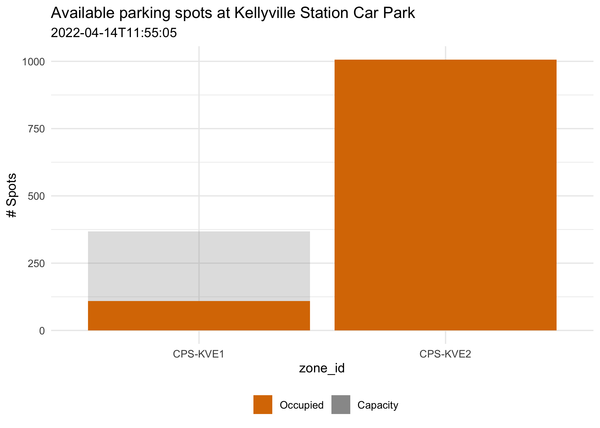
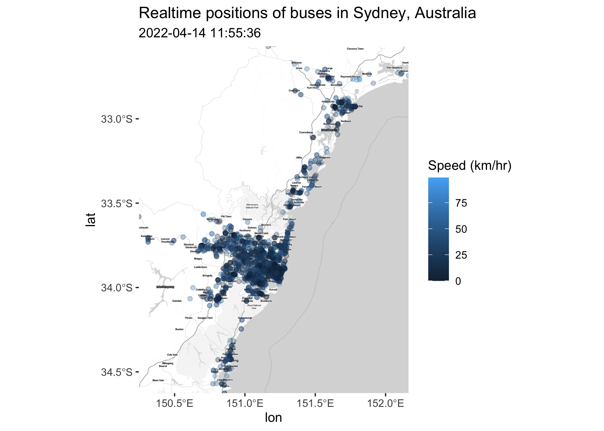

The goal of tfnswapi is to provide an easy way for R users to download data from TfNSW Open Data.
Installation
You can install the tfnswapi package from GitHub with:
# install.packages("devtools")
devtools::install_github("asiripanich/tfnswapi")Examples
Carpark API
library(tfnswapi)
# See what facilities are available
# remove `if (FALSE)` to register your own API key
if (FALSE) {
tfnswapi_register("<your-api-key>")
}
carparks <- tfnswapi_get("carpark")
#> No encoding supplied: defaulting to UTF-8.
carpark_ids <- names(carparks$content)
names(carpark_ids) <- carparks$content
carpark_ids
#> Tallawong Station Car Park Warriewood Car Park
#> "1" "10"
#> Narrabeen Car Park Mona Vale Car Park
#> "11" "12"
#> Dee Why Car Park West Ryde Car Park
#> "13" "14"
#> Sutherland East Parade Car Park Leppington Car Park
#> "15" "16"
#> Edmondson Park South Car Park Kellyville Station Car Park
#> "17" "2"
#> Bella Vista Station Car Park Hills Showground Station Car Park
#> "3" "4"
#> Ashfield Car Park Kogarah Car Park
#> "486" "487"
#> Seven Hills Car Park Manly Vale Car Park
#> "488" "489"
#> Brookvale Car Park Cherrybrook Station Car Park
#> "490" "5"
#> Gordon Henry St North Car Park Kiama Car Park
#> "6" "7"
#> Revesby Car Park
#> "9"
# get data of just one carpark
carpark <- tfnswapi_get("carpark", params = list(facility = 2))
#> No encoding supplied: defaulting to UTF-8.
tidied_carpark <- data.frame(
zone_id = purrr::map_chr(carpark$content$zones, purrr::pluck("zone_id")),
total_spots = purrr::map_chr(carpark$content$zones, purrr::pluck("spots")),
occupied_spots = purrr::map_chr(carpark$content$zones, purrr::pluck(list("occupancy", "total")))
)
library(ggplot2)
ggplot(data = tidied_carpark, aes(x = zone_id)) +
geom_col(aes(y = as.integer(total_spots), fill = "Capacity"), alpha = 0.3) +
geom_col(aes(y = as.integer(occupied_spots), fill = "Occupied")) +
theme_minimal() +
scale_fill_manual(values = c("Occupied" = "#DA7800", "Capacity" = "grey60")) +
theme(legend.position = "bottom") +
labs(
title = paste("Available parking spots at", carpark$content$facility_name),
subtitle = carpark$content$MessageDate,
y = "# Spots",
fill = ""
)
GTFS Realtime API
See TfNSW GTFS Realtime documentation here.
library(tfnswapi)
library(ggplot2)
library(ggmap)
library(data.table)
library(sf)
# remove `if (FALSE)` to register your own API key
if (FALSE) {
tfnswapi_register("<your-api-key>")
}
bus_response <- tfnswapi_get("gtfs/vehiclepos/buses")
bus_position_table <- data.table::as.data.table(bus_response$content$entity$vehicle$position)
bus_position_table <-
bus_position_table %>%
.[!is.na(longitude), ] %>%
sf::st_as_sf(coords = c("longitude", "latitude")) %>%
sf::st_set_crs(value = sf::st_crs("WGS84"))
# Convert momentary speed measured by the vehicle in meters per second to
# kilometers per hour
bus_position_table$speed <- 3.6 * bus_position_table$speed
# get base map
sydney_bbox <- sf::st_geometry(bus_position_table) %>% sf::st_bbox()
names(sydney_bbox) <- c("left", "bottom", "right", "top")
sydney_map <- get_stamenmap(sydney_bbox, maptype = "toner-lite", messaging = FALSE)
ggmap(sydney_map) +
coord_sf(crs = sf::st_crs("WGS84")) +
geom_sf(data = bus_position_table, aes(color = speed), alpha = 0.3, inherit.aes = FALSE) +
labs(
title = "Realtime positions of buses in Sydney, Australia",
color = "Speed (km/hr)",
subtitle = format(bus_response$date, tz = "Australia/Sydney")
)
Animate GTFS Realtime data
Animate GTFS Realtime data with mapdeck.
library(tfnswapi)
library(data.table)
library(sf)
library(mapdeck)
library(sfheaders)
# remove `if (FALSE)` to register your own API key
if (FALSE) {
tfnswapi_register("<your-api-key>")
}
# query GTFS realtime 20 times, 5 seconds between each request.
n <- 30
bus_responses <- lapply(1:n, function(x) {
Sys.sleep(5)
tfnswapi_get("gtfs/vehiclepos/buses")
})
# tidy the vehicle position data
bus_position_tables <- lapply(1:n, function(x) {
.data <- bus_responses[[x]]$content$entity$vehicle$position
.data[["vehicle_id"]] <- bus_responses[[x]]$content$entity$vehicle$vehicle$id
.data[["timestep"]] <- x
.data
}) %>%
data.table::rbindlist() %>%
data.table::setorder(vehicle_id) %>%
.[, elev := 0] %>%
.[!is.na(latitude)]
# convert it into sf
bus_position_sfc <- sfheaders::sfc_linestring(
obj = bus_position_tables,
x = "longitude",
y = "latitude",
z = "elev",
m = "timestep",
linestring_id = "vehicle_id"
)
bus_position_sf <-
sf::st_as_sf(
bus_position_tables[
bus_position_tables[, .I[1], by = vehicle_id]$V1,
.(vehicle_id, bearing, speed)
],
bus_position_sfc
)
# visualise
mapdeck(style = mapdeck_style("dark")) %>%
add_trips(
data = bus_position_sf,
stroke_colour = "vehicle_id",
animation_speed = 10
)